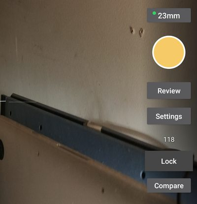

wander wildwood
I make small things, mostly for a little E Ink phone, and tinker with a few home servers that several of them talk to. They keep to themselves — no accounts, nothing sent to me, nothing that needs looking after. Most of the work is deciding what to leave out.
For the Mudita Kompakt
The Kompakt is an Android phone with a black-and-white E Ink screen that redraws slowly. Everything here is drawn for that screen, so nothing animates and every page can be read in sunlight.
Everyday

Messaging / 言伝 kotozute
SMS, MMS and Signal in one inbox, and a page your phone serves to your own computer so you can text from a keyboard.

Files / 棚 tana
A file manager, with the shared drives on your own servers as places like any other. Choose several things at once; a copy is written whole or not at all.

Whereabouts / 居場所 ibasho
Finds your phone when it is lost: where it is, a ring, a lock. With its server, the people who share with you appear on one map.

Cycle
A cycle tracker with no permissions at all. It shows what you recorded, expects what comes next, and keeps everything you write on the phone.
Reading, writing, listening

Audio Reading / 耳読 mimidoku
An audiobook player. Point it at a folder of books, tell it once how they are laid out, and it keeps your place in each one.

Music Box / 自鳴琴 jimeikin
A music player for a folder of your own music, a music server you run, internet radio and YouTube Music. A song you download stays on the phone.

Clippings / 切抜 kirinuki
Feeds read as plain text, with Gemini, gopher and Spartan alongside them; fetched on wifi, read with the radio off. The volume keys turn the page.

Typewriter / 打字機 dajiki
A text editor that opens in landscape and stays there, for writing with a keyboard connected to the phone. What you write is plain text, in a folder you choose.
Outdoors

Birding / 探鳥 tanchō
Names the birds it hears, offline, with BirdNET running on the phone itself. A bird's Wikipedia page is a press away, opened in your browser.

Mushroom Journal / 茸帳 kinokochō
Write a mushroom down while you are standing over it, and work out at home what it might be. It narrows a list, never decides, and says nothing about eating one.

Detour / 寄り道 yorimichi
Press once and it picks somewhere near you to walk to, with no particular reason to go there, and gives you an arrow and a distance to follow.

Sky / 空模様 soramoyō
The days ahead, the rain radar, and your own weather station if you have one. It says no more than the station and the forecast know.
Instruments

Tuning Fork / 音叉 onsa
A tuner, chromatic or by instrument, with a pitch plot, a cents readout and temperaments well past equal. The screen stays awake while you play.

Level / 水盛 mizumori
A spirit level that knows whether it is lying flat or standing on an edge, and shows the right vial for each. It says level only when it is.

Speedometer / 速度計 sokudokei
How fast you are going, how high you are, and what the air is doing. Press the speed and it fills the screen. Not accurate enough to navigate by.

Star Chart / 星図 seizu
The sky over you, drawn the way a paper star atlas draws it, black on white. Set any moment and any place to see what will be up.
Games

Go / 九路盤 kuroban
A game of Go on a 9×9 board, against GNU Go or the person opposite, with handicaps, a hint when you want one, and the board counted at the end.

Chess+
The phone's own chess app, with a second player added: two people on one board, passing the phone back and forth between moves.

Handheld Games / 携帯遊戯 keitaiyugi
Game Boy games, drawn in four greys for a screen that has no colour. The picture lands at exactly three times size, so nothing is resampled.
Stop motion
One app for Android phones: the capture half of a stop-motion practice. The film is put together elsewhere.

Stop Motion / 駒撮り komadori
Stop-motion capture for Android phones; on the Xiaomi 17 Ultra it reaches all three rear lenses where other apps find one. The exposure locks for the whole film, with onion skin, drawn guides and an interval timer.
Installing
Each download is an .apk, the file an Android phone installs from. Open it on
the Kompakt and allow the installation when it asks. The first time, Android will want
permission to install from wherever you downloaded it.
Every release publishes a .sha256 beside the APK, so you can check the file you
got is the file that was built.
To be told when there is a new version, add any of the source links above to Obtainium, which watches a repository and offers you its releases.